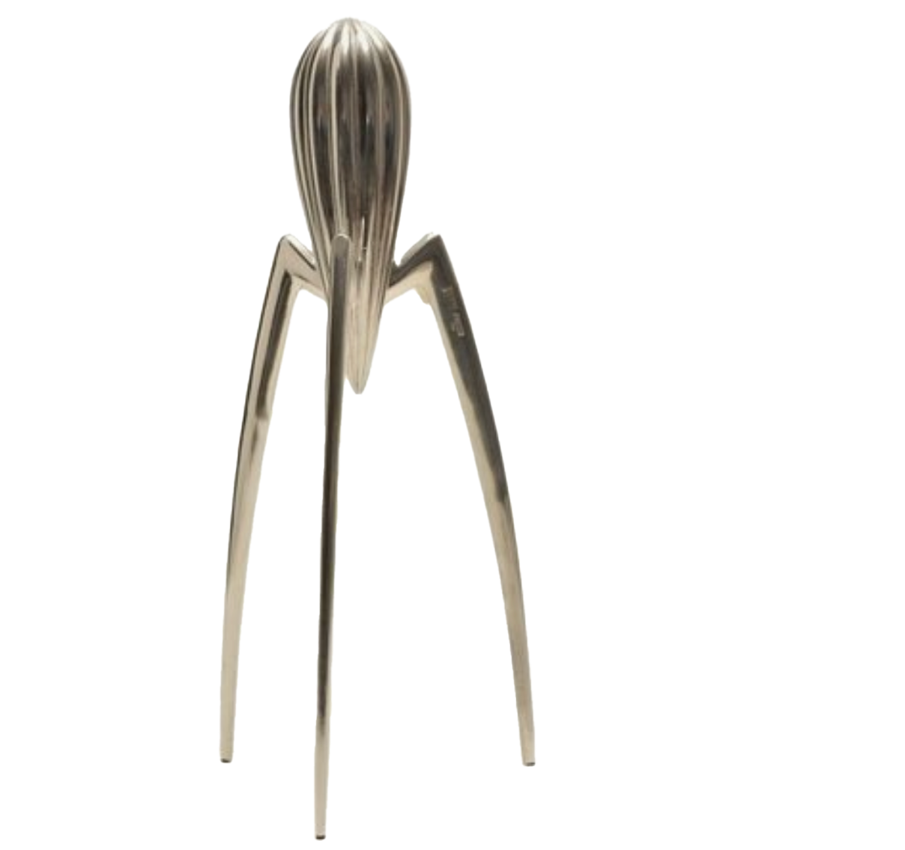
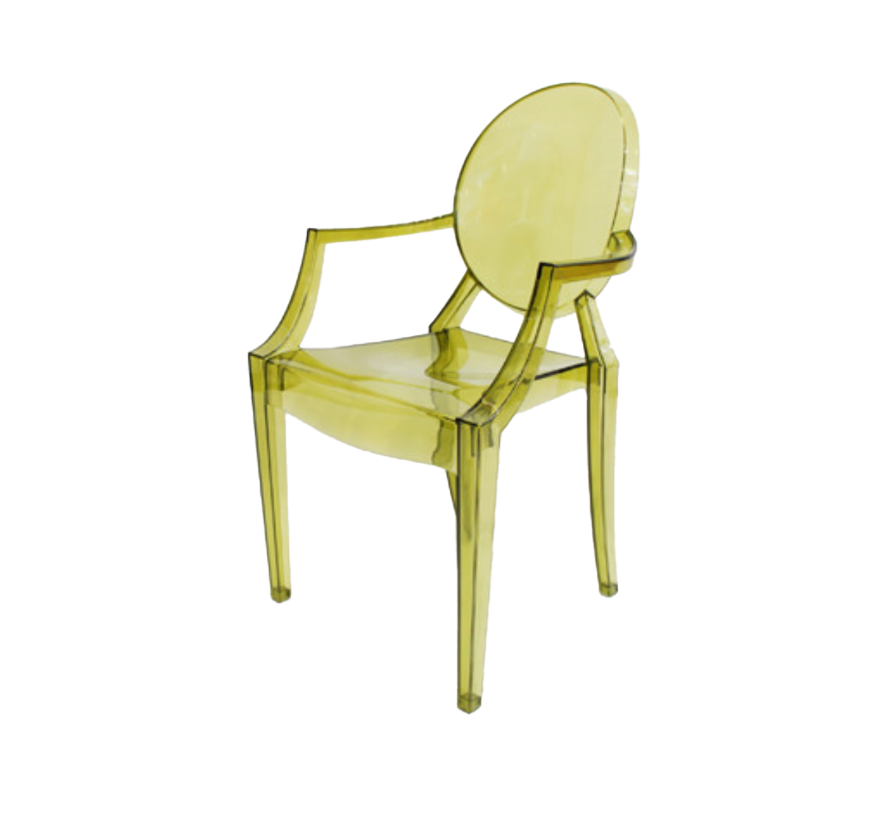
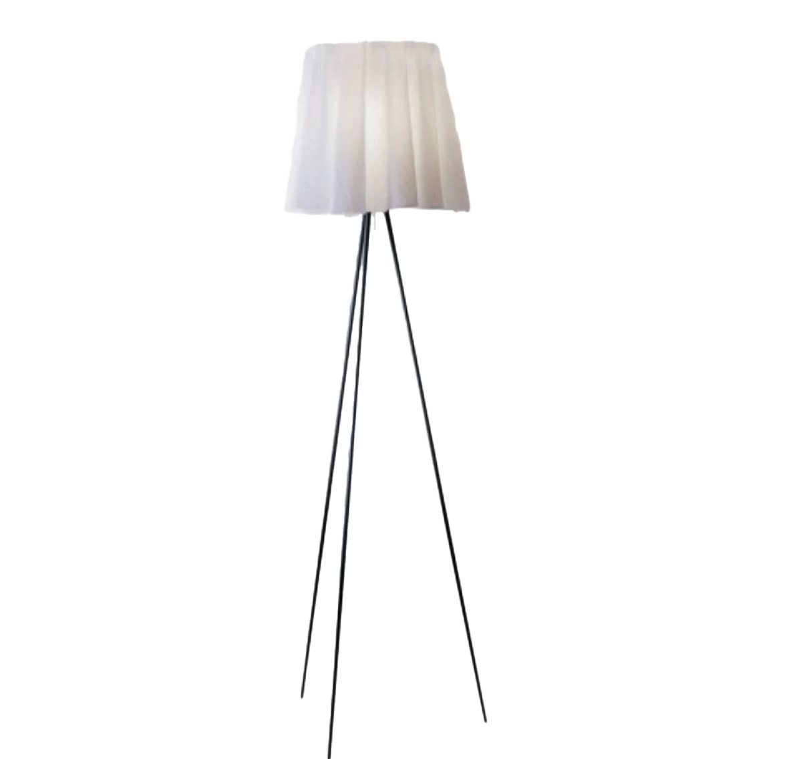

Tribute
1. Jucy Salif(주시 살라프)

레스토랑에서 오징어 요리를 먹다가 아이디어를 얻은 문제작 레몬즙 짜는 기구,
주시 살리프(Jucy Salif)는 핍립스탁의 대표작일 뿐만 아니라
1990년대를 대표하는 디자인의 아이콘이 된다. 주시 살라프는 디자인 적으로도 뛰어나지만,
기능면에서도 매우 뛰어나며 세척도 용이해 사용이 편리하다. 이 작품을 보면 알 수 있듯이
필립스탁의 작품은 유머와 세련된 디자인 기능성까지 모두 갖추고 있다.

2.Louis ghost(루이 고스트 의자)
라 마리에는 필립스탁이 개발한 세계 최초의 전체 투명의자이다. 폴리카보네이트라는 소재를 몰딩 하여
제작한 이 의자는 심플하다 못해 깔끔하기까지 한 느낌이 드는 데, 이러한 전체적인 투명한 디자인에서
점점 발전을 이루며 색을 가미한 의자의 발전에도 큰 영향을 끼치게 된 디자인 의자가 된다. 이후에 등장한
투명의자가 바로 이 루이 고스트 의자 인 데, 이 디자인은 전 세계에서 연간 5만개가 팔린
베스트 셀러로 카르텔에서 가장 많이 팔린 의자이다.
3.Rosy Angelis Floor Lamp(로지 엔젤리스 플로어 램프)

얇은 패브릭과 직선 프레임으로 만들어진 필립스탁의 유명한 디자인 중 하나이다.
고급스러운 쉐입과 주름잡힌 천을 통해 나오는 로맨틱한 불빛의 느낌이 온화하고 부드러워
공간을 클래식하고 분위기 있게 연출해 준다. 중앙에 위치한 스위치로 밝기 조절이 가능해 편의성 또한 높다.